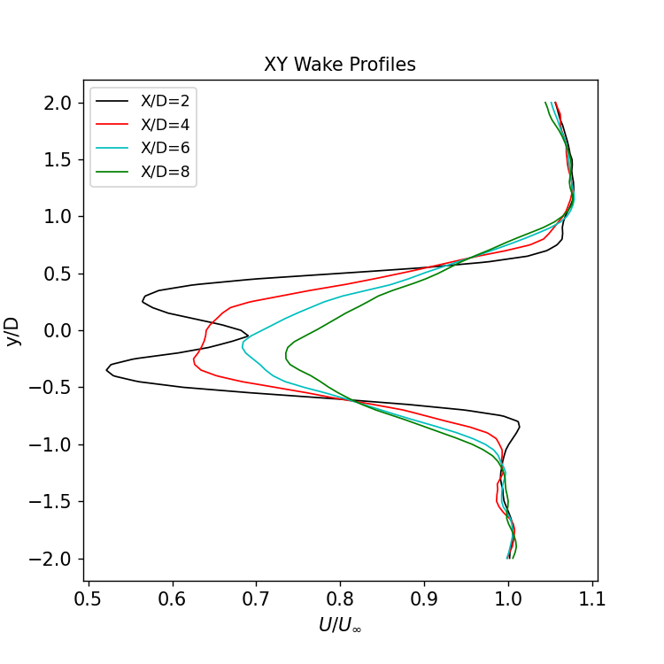
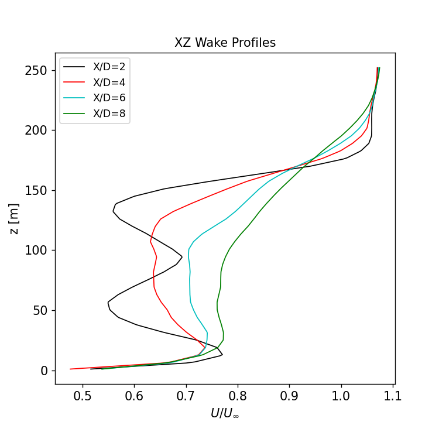

Actuator line NREL5MW in convectively unstable ABL with rigid blades.
This benchmark problem describes the simulation of a single NREL5MW turbine using an actuator line model in a turbulent, slightly convective unstable atmospheric boundary layer. In contrast to the flexible NREL5MW turbine case, this simulation uses rigid blades with no deformation, and no turbine controller is used, so the turbine spins with fixed rotor speed and fixed blade pitch.
Contents
Simulation description and setup
Full details provided in setup documentation.
The characteristics of the NREL5MW turbine used in this study are are defined in the technical report NREL/TP-500-38060. The basic properties are included below
Turbine property |
Value |
|---|---|
Rotor diameter |
126 m |
Hub-height |
90 m |
Rated power |
5 MW |
Rated wind speed |
11.4 m/s |
Rated rotor speed |
12.1 rpm |
Cut in wind speed |
3 m/s |
Cut out wind speed |
25 m/s |
An OpenFAST turbine model is used to calculate the blade aerodynamics. A fixed controller is used, so the blade pitch is a constant 0 degrees and rotor speed is fixed to 12.1 rpm. The NREL5MW turbine is placed in a 5km x 5km x 2km domain with a total mesh size of 70.5 million elements. The background mesh resolution is 10m, with two levels of refinement to reach 2.5m resolution at the rotor disk. For the blade-resolved problem, an additional two levels of refinement are used in the AMR-Wind domain.

This atmospheric inflow for this case is generated via the convectively unstable benchmark case.
Code performance
Full details provided in performance documentation.
The job was run on an HPC cluster using 8 nodes/896 CPU’s and run for 23.3 hours wall-time:
Parameter |
Value |
|---|---|
Number of nodes |
8 |
Number of CPUs |
896 |
Wall-time |
21.6 hours |
CPU-hours |
19316.9 |
Postprocessing
Full details provided in postprocessing documentation.
A full set of postprocessing scripts is provided to extract results and images from the AMR-Wind simulations. These scripts and notebooks will provide the ability to generate
velocity contour visualizations
turbine performance results
blade loading profiles
downstream wake profiles
Results
Full details provided in results documentation.
A description of the AMR-Wind results is included in the results documentation. When appropriate, these will include comparisons against results from other codes and other simulation fidelities of the same NREL5MW turbine case.
 